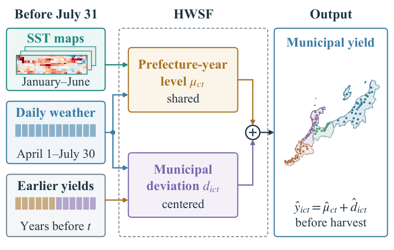
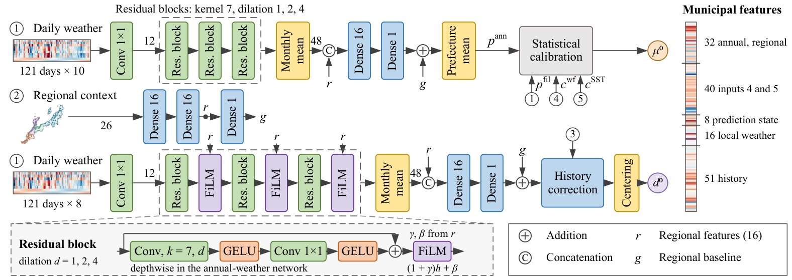
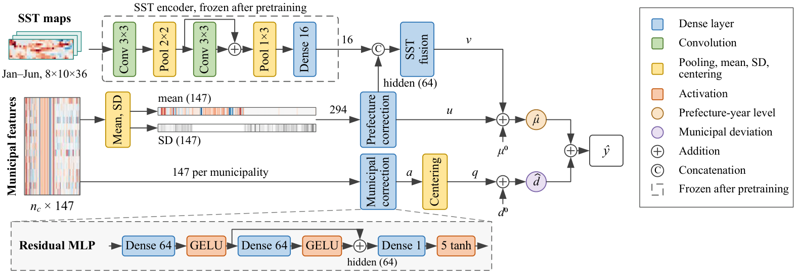
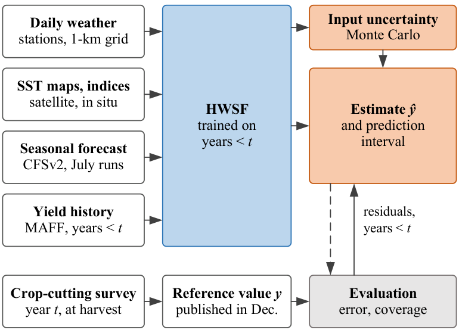
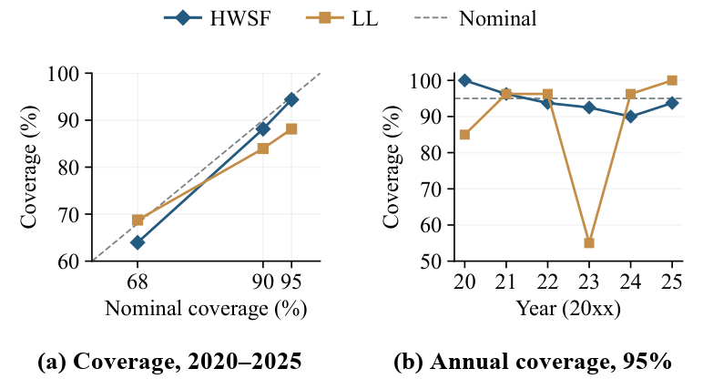
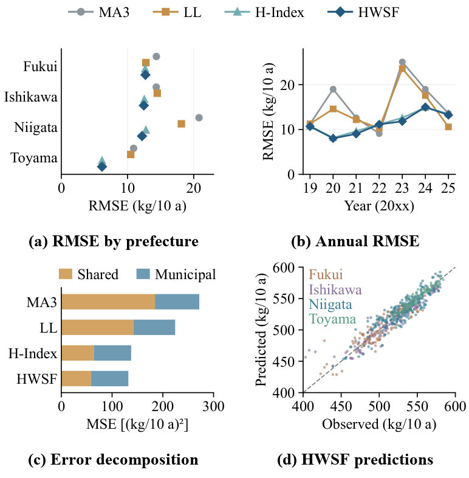
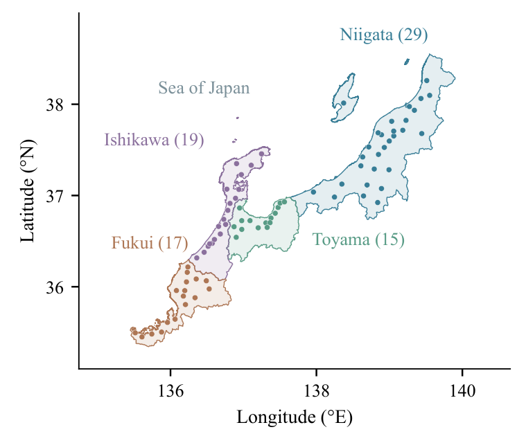
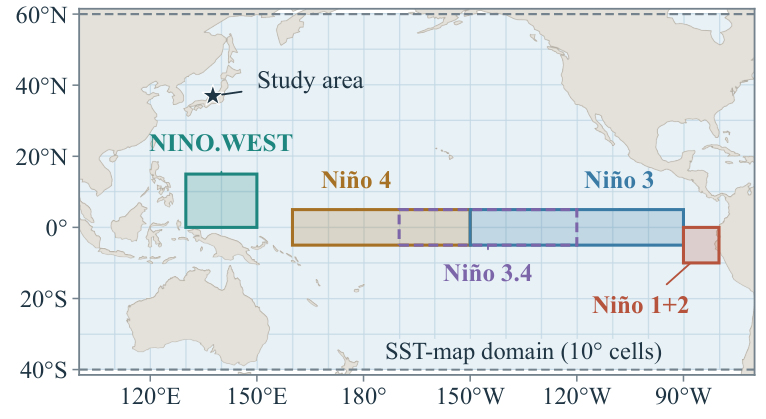

Preharvest Municipal Rice Yield Estimation With Hierarchical Weather and Sea Surface Temperature Fusion and Uncertainty Quantification
HWSF · Hierarchical Weather and Sea Surface Temperature Fusion

Abstract
Early estimates of rice yield support storage planning before the harvest. However, official municipal statistics appear only after the harvest, so preharvest estimates must rely on other measured quantities. Municipal estimation must also capture both regional growing conditions and local yield differences. We developed the Hierarchical Weather and Sea Surface Temperature Fusion model for municipal rice yield estimation at the end of July. The model combines daily weather, regional climate, recent yield history, seasonal forecasts, and ocean information. Separate prediction branches represent the prefecture-year yield level and the differences among municipalities within each prefecture. We used a masked reconstruction encoder to learn spatial features from historical sea surface temperature maps. These features supplement sea surface temperature indices in the prefecture branch, while local weather and historical residuals inform the municipal branch. We quantified uncertainty by Monte Carlo propagation of input uncertainty and by prediction intervals calibrated with past residuals. In a retrospective evaluation with annual refitting in four Japanese prefectures, the proposed model achieved a root mean square error of 11.50 kg/10 a, 23.3% lower than that of a local-level historical baseline. It also outperformed machine-learning and nonhierarchical baselines in all four prefectures. Its 95% prediction intervals covered 94.4% of the evaluation records and were 24.0% narrower than those of this baseline. Propagated input uncertainty was small compared with the residual error. Ablation experiments identified contributions from sea surface temperature information, annual and local weather, and feature dispersion, with a smaller additional gain from learned sea surface temperature map features.
Method
HWSF writes each municipal yield as the sum of a prefecture-year level, shared by all study municipalities in a prefecture, and a municipal deviation centered within each prefecture-year. Three base networks process the regional context and the daily weather. With statistical calibration and recent yield history, they give a base prefecture yield, a base municipal deviation, and 147 features for each municipality.

Two correction networks then adjust the two components separately. The prefecture correction reads the mean and standard deviation of the features within each prefecture-year; the municipal correction reads each municipality's own features, and its output is centered within the prefecture-year. Features learned from sea surface temperature (SST) maps by a masked reconstruction encoder enter only the prefecture-year level, through an SST fusion network.

Uncertainty evaluation
We treat the trained model as the function of a measurement model and evaluate the uncertainty of its estimates in two steps. Monte Carlo propagation perturbs the target-year inputs (weather representativeness, SST map errors, the reporting resolution of earlier yields, and SST-index resolution) and gives the input standard uncertainty of each estimate. Residuals of earlier evaluation years then calibrate the prediction interval. The reference value is the municipal statistic that MAFF derives from the crop survey at harvest.


| Nominal | Method | Coverage | Mean width |
|---|---|---|---|
| 95% | HWSF | 94.4% | 39.7 |
| LL | 88.1% | 52.2 | |
| 90% | HWSF | 88.1% | 33.3 |
| LL | 84.0% | 43.8 | |
| 68% | HWSF | 64.0% | 20.1 |
| LL | 68.8% | 26.5 |
Widths in kg/10 a. LL is the local-level historical baseline, with intervals constructed in the same way from its own residuals. At the 95% level, the mean interval scores are 58.6 for HWSF and 95.8 for LL.
Results
We refitted every model for each target year from 2019 to 2025, so each estimate uses only labels of earlier years. Over the 560 municipality-year records, HWSF had the lowest error among the compared methods.
| Group | Method | RMSE | MAE | Bias | R² |
|---|---|---|---|---|---|
| Historical | MA3 | 16.489 | 12.249 | +0.927 | 0.747 |
| LL | 14.980 | 11.000 | +1.464 | 0.791 | |
| LL-WC | 15.052 | 11.186 | +1.441 | 0.789 | |
| Machine learning | Random forest | 17.131 | 13.202 | −1.829 | 0.727 |
| XGBoost | 17.076 | 13.212 | −2.026 | 0.729 | |
| Neural | Direct network | 16.951 | 13.681 | −0.049 | 0.733 |
| Single residual network | 12.096 | 9.123 | +1.239 | 0.864 | |
| H-Index (without SST maps) | 11.731 | 8.962 | −0.606 | 0.872 | |
| HWSF | 11.495 | 8.769 | −0.290 | 0.877 |
RMSE, MAE, and bias (prediction minus observation) in kg/10 a, where 10 a equals 1000 m². MA3: three-year moving average; LL: local-level model; LL-WC: LL with a linear weather correction.

Data


All inputs were available before July 31, 00:00 Japan Standard Time. We do not redistribute the source data; they can be obtained from the providers. The code and experiment records are available in the GitHub repository.
- Municipal rice yields: crop statistics of the Ministry of Agriculture, Forestry and Fisheries of Japan (MAFF, in Japanese)
- Daily weather: agro-meteorological grid data of the National Agriculture and Food Research Organization (NARO, in Japanese; registration required)
- SST maps: NOAA optimum interpolation SST, version 2.1 (OISST)
- SST indices: Niño indices of the NOAA Climate Prediction Center (CPC) and NINO.WEST of the Japan Meteorological Agency (JMA)
- Seasonal forecasts: NCEP Climate Forecast System version 2 (CFSv2), July runs
- Prefecture-level weather for fitting the SST-index correction: NASA POWER
- Municipal boundaries: administrative-zone data N03 of the Ministry of Land, Infrastructure, Transport and Tourism (MLIT, in Japanese)